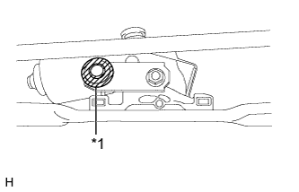
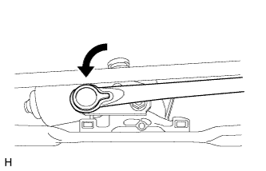
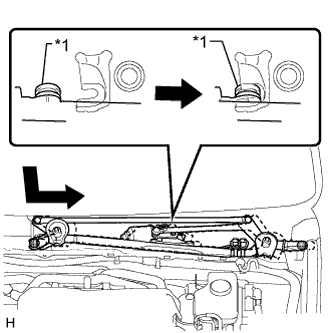
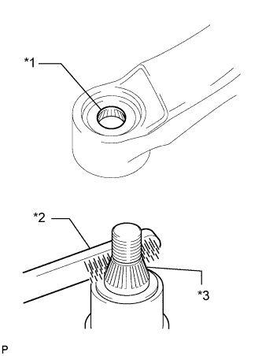
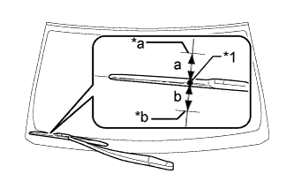
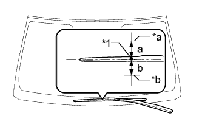
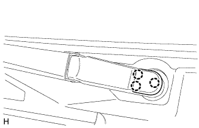

FRONT WIPER MOTOR > INSTALLATION |
| 1. INSTALL WIPER MOTOR WIRE |
Attach the claw to install the wiper motor wire.
| 2. INSTALL WINDSHIELD WIPER MOTOR ASSEMBLY |
Using a T30 "TORX" socket, install the wiper motor with the 2 bolts.
Connect the connector.
|  |
Apply MP grease to the crank arm pivot of the front wiper crank.
| *1 | Crank Arm Pivot |
 | MP grease |
|  |
Connect the rod to the crank arm pivot of the front wiper crank.
| 3. INSTALL WINDSHIELD WIPER MOTOR AND LINK |
|  |
Attach the grommet as shown in the illustration.
| *1 | Grommet |
Install the windshield wiper motor and link with the 2 bolts.
Connect the connector.
Attach the clamp.
| 4. INSTALL COWL TOP VENTILATOR LOUVER SUB-ASSEMBLY |
 |
Attach the 10 guides (B).
Attach the 6 claws and guide (A) as shown in the illustration.
Install the 2 clips to the cowl top ventilator louver sub-assembly.
| *1 | Guide A |
| *2 | Guide B |
| 5. INSTALL CENTER NO. 2 COWL TOP VENTILATOR LOUVER |
Attach the 2 claws and 3 guides to install the center No. 2 cowl top ventilator louver.
| 6. INSTALL HOOD TO COWL TOP SEAL |
| 7. INSTALL FRONT WIPER ARM AND BLADE ASSEMBLY RH |
Operate the wiper and stop the windshield wiper motor at the automatic stop position.
|  |
When reusing the front wiper arm and blade assembly RH:
Clean the wiper arm serrations.
| *1 | Wiper Arm Serration |
| *2 | Wire Brush |
| *3 | Wiper Pivot Serration |
When reusing the windshield wiper link assembly:
Clean the wiper pivot serrations with a wire brush.
|  |
Install the front wiper arm and blade assembly RH with the nut to the position shown in the illustration.
| Area | Standard Condition |
| a | 7.5 mm (0.295 in.) |
| b | 7.5 mm (0.295 in.) |
| *1 | Ceramic Dot |
| *a | Upper Limit |
| *b | Lower Limit |
| 8. INSTALL FRONT WIPER ARM AND BLADE ASSEMBLY LH |
When reusing the front wiper arm and blade assembly LH:
Clean the wiper arm serrations.
| *1 | Wiper Arm Serration |
| *2 | Wire Brush |
| *3 | Wiper Pivot Serration |
When reusing the windshield wiper link assembly:
Clean the wiper pivot serrations with a wire brush.
|  |
Install the front wiper arm and blade assembly LH with the nut to the position shown in the illustration.
| Area | Standard Condition |
| a | 7.5 mm (0.295 in.) |
| b | 7.5 mm (0.295 in.) |
| *1 | Ceramic Dot |
| *a | Upper Limit |
| *b | Lower Limit |
Operate the front wipers while spraying washer fluid on the windshield glass. Make sure that the front wipers function properly and there is no interference with the vehicle body.
| 9. INSTALL FRONT WIPER ARM HEAD CAP |
|  |
Attach the 3 claws to install the wiper arm head cap.
| 10. INSTALL FRONT FENDER TO COWL SIDE SEAL LH |
Attach the 5 claws to install the front fender to cowl side seal LH.
| 11. INSTALL FRONT FENDER TO COWL SIDE SEAL RH |
| 12. INSTALL FRONT FENDER SIDE PANEL PROTECTOR LH |
Attach the 3 clips and guide to install the fender side panel.
| 13. INSTALL FRONT FENDER SIDE PANEL PROTECTOR RH |
| 14. INSTALL UPPER RADIATOR SUPPORT SEAL |
Install the upper radiator support seal with the 13 clips.
| 15. INSTALL ENGINE ROOM SIDE COVER LH |
Install the engine room side cover with the 4 clips.
| 16. INSTALL ENGINE ROOM COVER SIDE |
Install the engine room side cover with the 4 clips.
| 17. CONNECT CABLE TO NEGATIVE BATTERY TERMINAL |